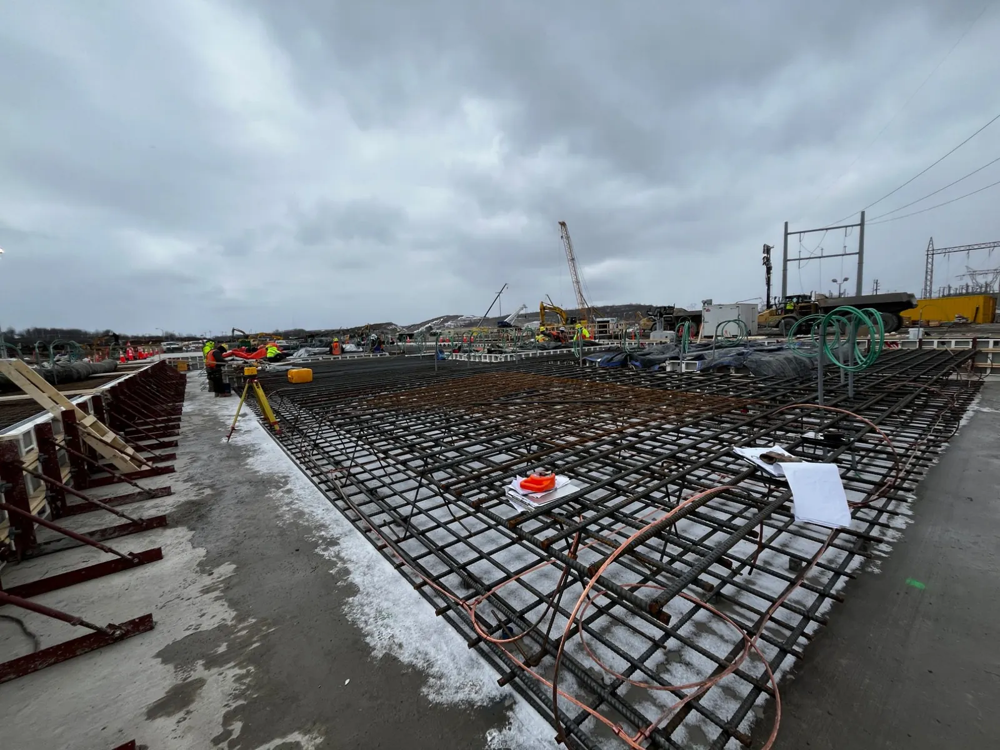
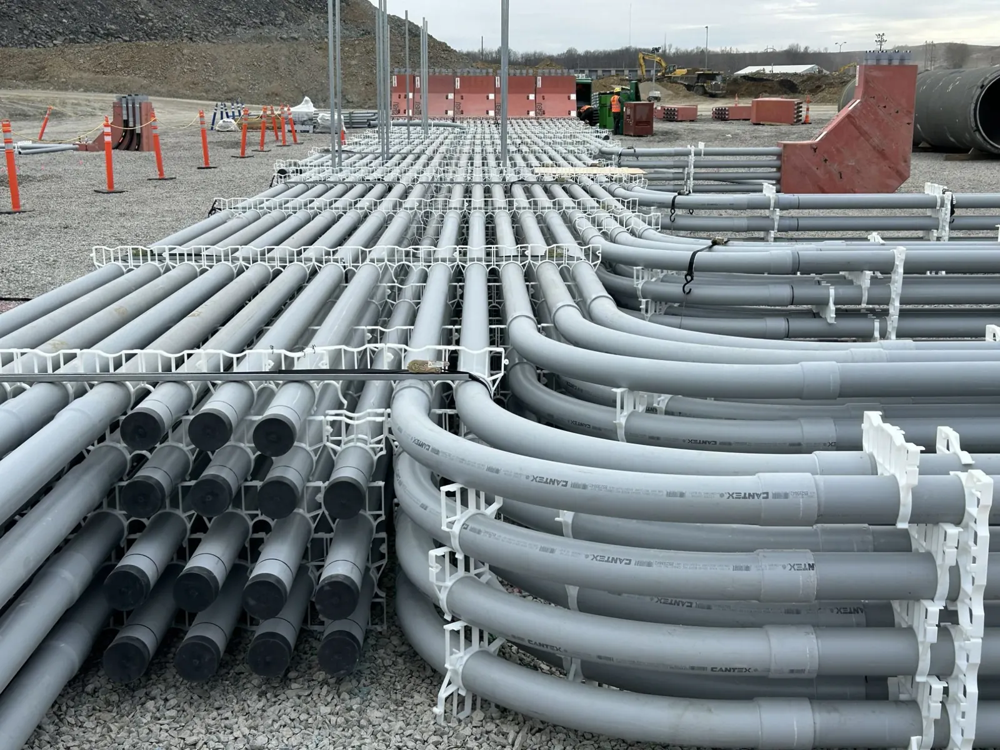

Image brief. The site as it is now, ground level
The same ground, from 1969 to today.
The Homer City Generating Station produced power here from 1969 to 2023. These dated photographs show the site since, stage by stage.
The site
Then and now
 Image brief. Homer City Generating Station (IUP deck photo essay, 1969 to 2023)
Image brief. Homer City Generating Station (IUP deck photo essay, 1969 to 2023) Image brief. Unit 5 HRSG (IUP deck photo essay, July 2026)
Image brief. Unit 5 HRSG (IUP deck photo essay, July 2026)12 stages
Stage by stage
Oldest first, with the date each photograph was taken.
-
1969 to 2023
Homer City Generating Station
The Homer City Generating Station produced power on this site from 1969 to 2023.
Image brief. Homer City Generating Station (IUP deck photo essay, 1969 to 2023) -
March 2025
Inflection point
Demolition of the stacks and towers at the former Homer City Generating Station begins.

Image brief. Inflection point (IUP deck photo essay, March 2025) -
November 2025
After the stacks and towers came down
The former station’s stacks and towers have come down.
Image brief. After the stacks and towers came down (IUP deck photo essay, November 2025) -
February 2026
View from the north
Image brief. View from the north (IUP deck photo essay, February 2026) -
February to March 2026
Concrete base of the GIS slab
Image brief. Concrete base of the GIS slab (IUP deck photo essay, February to March 2026) -
March 2026
First steel, going vertical
Photographed in March 2026. The timeline dates the milestone, “crossed first steel threshold with commencement of vertical construction”, to April 2026.
 Image brief. First steel, going vertical (IUP deck photo essay, March 2026)
Image brief. First steel, going vertical (IUP deck photo essay, March 2026) -
April 2026
Power Block aerial, looking north
Image brief. Power Block aerial, looking north (IUP deck photo essay, April 2026) -
April 2026
GIS building and foundations
Image brief. GIS building and foundations (IUP deck photo essay, April 2026) -
April 2026
Water treatment area
Image brief. Water treatment area (IUP deck photo essay, April 2026) -
July 2026
Mod yard piperack fabrication
Image brief. Mod yard piperack fabrication (IUP deck photo essay, July 2026) -
July 2026
GIS working at height
Image brief. GIS working at height (IUP deck photo essay, July 2026) -
July 2026
Unit 5 HRSG
One of the heat recovery steam generators (HRSGs), which capture heat from the turbines’ exhaust to make steam for more power.
Image brief. Unit 5 HRSG (IUP deck photo essay, July 2026)
Key milestones
From demolition in March 2025 to what comes next
2025
Demolition & site development
- March 2025
Demolition of the stacks and towers at the former Homer City Generating Station begins
- April 2025
Plan unveiled to build the Homer City Energy Campus in partnership with Kiewit Power Constructors Co.
- April 2025
GE Vernova confirmed to provide seven high-efficiency 7HA.02 natural gas turbines for the campus
- April 2025
Corey Hessen appointed as CEO, bringing significant experience in power generation operations
- June 2025
Launch of Safety & Security Community Collaborative Team and Integrated Emergency Management Team
- July 2025
Hosted first community open house, convening hundreds of residents from across Indiana County
- July 2025
Participated in Senator McCormick’s Inaugural Pennsylvania Energy & Innovation Summit
- November 2025
PA DEP approved Homer City Generation’s air quality plan, authorizing construction and initial operations
2026
Construction
- March 2026
Mobilized construction workforce with Kiewit and local unions; crossed 1,000+ workers active on site
- April 2026
Crossed first steel threshold with commencement of vertical construction
- June 2026
Completed major demolition and transitioned into full construction phase
Upcoming
What comes next
- 2026
Installation of first equipment, including first deliveries of GE Vernova turbines expected in 2026
- To be announced
Anticipated announcement of customer(s)
What is being built now
The four stops on the site tour, what each one does, and the figures for the whole campus.